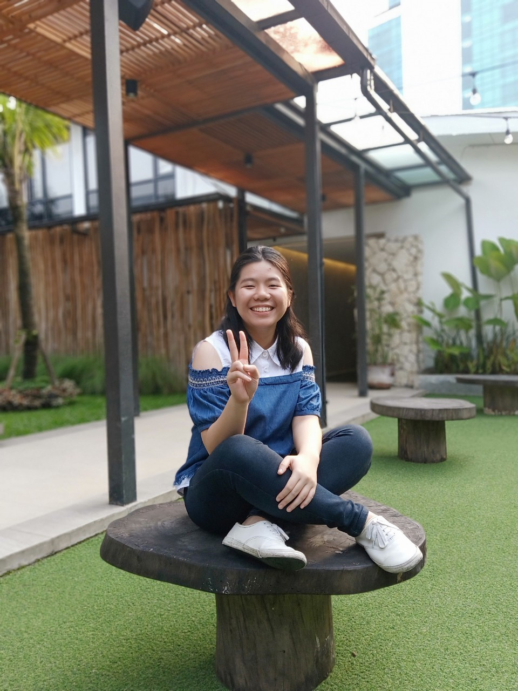

Cristine Artanty

Profile Singkat
Mahasiswi tingkat akhir jurusan Informatika pada Universitas Katolik Parahyangan, Senang explore hal baru
yang berhubungan dengan teknologi drama korea dan kpop. Saya rekomendasikan untuk mendengar lagu Celebrity - IU.
Selain senang korea saya juga senang baca komik(webtoon),
jika tertarik untuk baca bisa tanya saya untuk rekomendasi komik.
Selain sibuk kuliah, saya juga bekerja sebagai asisten dosen pada beberapa kelas praktikum. Saya mulai menjadi asisten
dosen dari tahun 2018 hingga sekarang.
Biodata
Cristine lahir pada tanggal 27 Januari 1999 di Kisaran.
Motto hidup
Work hard in silence, Let success be your noice